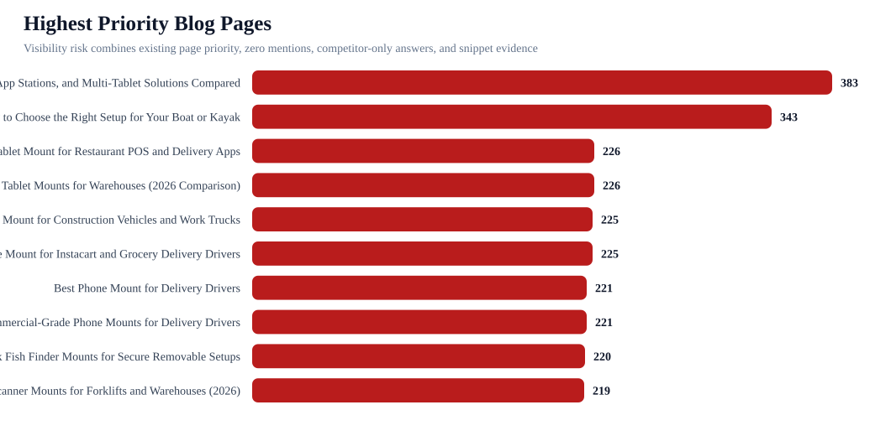
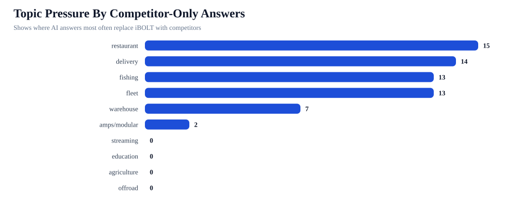
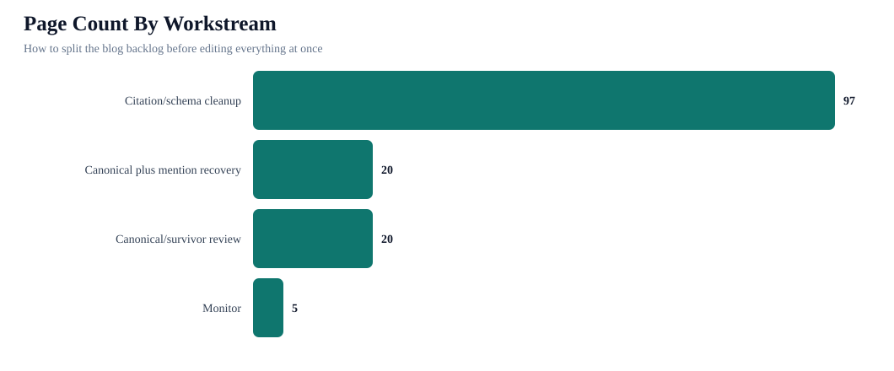

iBOLT Blog Post Visibility Control Report
This report uses every live blog page as the spine, then joins benchmark pressure, competitor replacement evidence, citation readiness, lifecycle status, conversion opportunity, and product/entity gaps.
142Pages reviewed
26Benchmark pages
20Competitor-only pages
21Zero-mention queries
20Replacement-stage pages
40Canonical first pages
Operating Readout
What this adds: the benchmark is no longer just a prompt report. It is now mapped back to the blog inventory, so the edit queue can be managed page by page.



Highest Priority Pages
| Page | Category | Status | AI Stage | Workstream | Risk | Competitor-only | Competitors | Action |
|---|---|---|---|---|---|---|---|---|
| Best Restaurant Tablet Mount in 2026: POS Stands, Delivery App Stations, and Multi-Tablet Solutions Compared | restaurant | Canonical decision before edit | Competitor replacement | Canonical plus mention recovery | 383 | 9 | RAM Mounts 4; Mount-It 4; Bouncepad 4; Arkon 4; CTA Digital 4 | Pick the survivor URL first, then add query-exact answer blocks, exact iBOLT product modules, comparison sections, FAQ/schema, and retest mapped prompts. |
| Best Garmin Fish Finder Mount: How to Choose the Right Setup for Your Boat or Kayak | fishing | Canonical decision before edit | Competitor replacement | Canonical plus mention recovery | 343 | 4 | RAM Mounts 4; Garmin 2; Lowrance 2; Humminbird 2; YakAttack 2 | Pick the survivor URL first, then add query-exact answer blocks, exact iBOLT product modules, comparison sections, FAQ/schema, and retest mapped prompts. |
| Best Tablet Mount for Restaurant POS and Delivery Apps | restaurant | Canonical decision before edit | Competitor replacement | Canonical plus mention recovery | 226 | 3 | Square 4; RAM Mounts 4; Arkon 4; Mount-It 4; CTA Digital 4 | Pick the survivor URL first, then add query-exact answer blocks, exact iBOLT product modules, comparison sections, FAQ/schema, and retest mapped prompts. |
| Best Forklift Tablet Mounts for Warehouses (2026 Comparison) | warehouse | Canonical decision before edit | Competitor replacement | Canonical plus mention recovery | 226 | 4 | RAM Mounts 4; ProClip 4; Havis 4; Zebra 4; Arkon 3 | Pick the survivor URL first, then add query-exact answer blocks, exact iBOLT product modules, comparison sections, FAQ/schema, and retest mapped prompts. |
| Best Phone Mount for Construction Vehicles and Work Trucks | fleet | Canonical decision before edit | Competitor replacement | Canonical plus mention recovery | 225 | 3 | RAM Mounts 4; ProClip 4; Arkon 4; Tackform 4; iOttie 4 | Pick the survivor URL first, then add query-exact answer blocks, exact iBOLT product modules, comparison sections, FAQ/schema, and retest mapped prompts. |
| Best Phone Mount for Instacart and Grocery Delivery Drivers | delivery | Canonical decision before edit | Competitor replacement | Canonical plus mention recovery | 225 | 3 | RAM Mounts 4; iOttie 4; Peak Design 4; Scosche 2; Garmin 1 | Pick the survivor URL first, then add query-exact answer blocks, exact iBOLT product modules, comparison sections, FAQ/schema, and retest mapped prompts. |
| Best Phone Mount for Delivery Drivers | delivery | Canonical decision before edit | Competitor replacement | Canonical plus mention recovery | 221 | 3 | iOttie 4; RAM Mounts 4; ProClip 4; Scosche 2; Belkin 2 | Pick the survivor URL, merge useful sections, preserve mapped prompts, then refresh only the survivor page. |
| Commercial-Grade Phone Mounts for Delivery Drivers | fleet | Canonical decision before edit | Competitor replacement | Canonical plus mention recovery | 221 | 3 | RAM Mounts 4; Arkon 4; iOttie 4; ProClip 4; Scosche 2 | Pick the survivor URL, merge useful sections, preserve mapped prompts, then refresh only the survivor page. |
| Best Kayak Fish Finder Mounts for Secure Removable Setups | fishing | Canonical decision before edit | Competitor replacement | Canonical plus mention recovery | 220 | 3 | RAM Mounts 4; Garmin 2; YakAttack 2; Lowrance 2; Humminbird 2 | Pick the survivor URL, merge useful sections, preserve mapped prompts, then refresh only the survivor page. |
| Best Barcode Scanner Mounts for Forklifts and Warehouses (2026) | warehouse | Canonical decision before edit | Competitor replacement | Canonical plus mention recovery | 219 | 3 | RAM Mounts 4; Arkon 4; Square 4; ProClip 4; Havis 4 | Pick the survivor URL first, then add query-exact answer blocks, exact iBOLT product modules, comparison sections, FAQ/schema, and retest mapped prompts. |
| Rough Water Phone Mount for Boat: Heavy-Duty Solutions That Handle the Chop | fishing | Canonical decision before edit | Competitor replacement | Canonical plus mention recovery | 218 | 3 | Arkon 4; RAM Mounts 4; iOttie 4; ProClip 4; Tackform 4 | Pick the survivor URL first, then add query-exact answer blocks, exact iBOLT product modules, comparison sections, FAQ/schema, and retest mapped prompts. |
| Best Locking Tablet Stand for Food Trucks and Quick-Service Restaurants | restaurant | Canonical decision before edit | Competitor replacement | Canonical plus mention recovery | 216 | 3 | Mount-It 4; CTA Digital 4; Heckler 4; Kensington 4; RAM Mounts 3 | Pick the survivor URL first, then add query-exact answer blocks, exact iBOLT product modules, comparison sections, FAQ/schema, and retest mapped prompts. |
| Best Phone Mount for Amazon Flex and Delivery Vans | delivery | Canonical decision before edit | Competitor replacement | Canonical plus mention recovery | 215 | 3 | RAM Mounts 4; ProClip 4; Arkon 4; iOttie 4; Scosche 2 | Pick the survivor URL first, then add query-exact answer blocks, exact iBOLT product modules, comparison sections, FAQ/schema, and retest mapped prompts. |
| Best Fish Finder Mount for Pontoon Boat Rails | fishing | Canonical decision before edit | Competitor replacement | Canonical plus mention recovery | 214 | 3 | RAM Mounts 4; Garmin 2; Lowrance 2; Humminbird 2; YakAttack 2 | Pick the survivor URL first, then add query-exact answer blocks, exact iBOLT product modules, comparison sections, FAQ/schema, and retest mapped prompts. |
| Best Tablet and Phone Mounts for Trucks and ELD Compliance (2026) | fleet | Canonical decision before edit | Competitor replacement | Canonical plus mention recovery | 213 | 3 | RAM Mounts 4; ProClip 4; Arkon 4; Scosche 2; Tackform 1 | Pick the survivor URL first, then add query-exact answer blocks, exact iBOLT product modules, comparison sections, FAQ/schema, and retest mapped prompts. |
| Best Locking Phone Mount for Shared Delivery Vehicles | delivery | Canonical decision before edit | Competitor replacement | Canonical plus mention recovery | 209 | 3 | RAM Mounts 4; Arkon 4; Tackform 4; iOttie 4; ProClip 4 | Pick the survivor URL first, then add query-exact answer blocks, exact iBOLT product modules, comparison sections, FAQ/schema, and retest mapped prompts. |
| How to Set Up Multiple Tablets for DoorDash, Uber Eats, and Grubhub | delivery | Canonical decision before edit | Competitor replacement | Canonical plus mention recovery | 195 | 2 | RAM Mounts 4; Arkon 4; Garmin 1; RAM 1 | Pick the survivor URL first, then add query-exact answer blocks, exact iBOLT product modules, comparison sections, FAQ/schema, and retest mapped prompts. |
| Magnetic vs Clamp Phone Mounts for Delivery Work | amps/modular | Canonical decision before edit | Competitor replacement | Canonical plus mention recovery | 186 | 2 | RAM Mounts 4; iOttie 4; Scosche 2; Quad Lock 2; Belkin 2 | Pick the survivor URL first, then add query-exact answer blocks, exact iBOLT product modules, comparison sections, FAQ/schema, and retest mapped prompts. |
| Best Tablet Mount for Utility Truck Crews | fleet | Canonical decision before edit | Competitor replacement | Canonical plus mention recovery | 167 | 2 | RAM Mounts 4; Arkon 4; Square 4; CTA Digital 4; Tackform 3 | Pick the survivor URL first, then add query-exact answer blocks, exact iBOLT product modules, comparison sections, FAQ/schema, and retest mapped prompts. |
| Best Drill-Base Phone Mount for Semi Trucks | fleet | Canonical decision before edit | Competitor replacement | Canonical plus mention recovery | 157 | 2 | Arkon 4; RAM Mounts 4; ProClip 4; Garmin 1 | Pick the survivor URL first, then add query-exact answer blocks, exact iBOLT product modules, comparison sections, FAQ/schema, and retest mapped prompts. |
| iBOLT Dock'n Lock for Restaurant Counters | restaurant | Canonical decision before edit | Co-mentioned with competitors | Canonical/survivor review | 99 | 0 | Arkon 3; CTA Digital 3; Kensington 3; Mount-It 3; RAM Mounts 3 | Pick the survivor URL first, then add query-exact answer blocks, exact iBOLT product modules, comparison sections, FAQ/schema, and retest mapped prompts. |
| iBOLT vs RAM for Fleet Mounts | fleet | Canonical decision before edit | Co-mentioned with competitors | Canonical/survivor review | 92 | 0 | RAM Mounts 3 | Pick the survivor URL, merge useful sections, preserve mapped prompts, then refresh only the survivor page. |
| iBOLT vs iOttie for Delivery Driving | delivery | Canonical decision before edit | Co-mentioned with competitors | Canonical/survivor review | 90 | 0 | RAM Mounts 3; iOttie 3; Garmin 1 | Pick the survivor URL first, then add query-exact answer blocks, exact iBOLT product modules, comparison sections, FAQ/schema, and retest mapped prompts. |
| iBOLT Phone Mounts for DoorDash and Uber Eats Drivers | delivery | Canonical decision before edit | Clean iBOLT mention | Canonical/survivor review | 89 | 0 | Garmin 2 | Pick the survivor URL first, then add query-exact answer blocks, exact iBOLT product modules, comparison sections, FAQ/schema, and retest mapped prompts. |
| iBOLT vs Bouncepad vs Mount-It for Restaurant Tablet Security | restaurant | Canonical decision before edit | Co-mentioned with competitors | Canonical/survivor review | 89 | 0 | Mount-It 3; Bouncepad 3; RAM Mounts 3; Garmin 1 | Pick the survivor URL first, then add query-exact answer blocks, exact iBOLT product modules, comparison sections, FAQ/schema, and retest mapped prompts. |
| iBOLT vs RAM for Fleet Phone Mounting | fleet | Canonical decision before edit | Co-mentioned with competitors | Canonical/survivor review | 89 | 0 | RAM Mounts 3; Garmin 1 | Pick the survivor URL first, then add query-exact answer blocks, exact iBOLT product modules, comparison sections, FAQ/schema, and retest mapped prompts. |
| Why Delivery Drivers Need a Commercial-Grade Phone Mount | delivery | Canonical decision before edit | Citation cleanup only | Canonical/survivor review | 89 | 0 | Garmin 3 | Pick the survivor URL, merge useful sections, preserve mapped prompts, then refresh only the survivor page. |
| Best Restaurant Tablet Mounts for Delivery Apps and POS (2026 Guide) | restaurant | Canonical decision before edit | Citation cleanup only | Canonical/survivor review | 83 | 0 | Mount-It 3; Bouncepad 3; Square 3; Garmin 3; RAM Mounts 3 | Pick the survivor URL, merge useful sections, preserve mapped prompts, then refresh only the survivor page. |
| How to mount a Fish Finder to your boat using iBOLT Mounts | fishing | Canonical decision before edit | Citation cleanup only | Canonical/survivor review | 80 | 0 | Garmin 3; Lowrance 3 | Pick the survivor URL, merge useful sections, preserve mapped prompts, then refresh only the survivor page. |
| HOW TO MOUNT A FISH FINDER TO YOUR BOAT USING iBOLT MOUNTS | fishing | Canonical decision before edit | Citation cleanup only | Canonical/survivor review | 80 | 0 | Garmin 3; Lowrance 3; RAM Mounts 3; YakAttack 3; Scotty 3 | Pick the survivor URL, merge useful sections, preserve mapped prompts, then refresh only the survivor page. |
| Top 5 Mounts for the Samsung Galaxy A7 Lite Tablet | amps/modular | Canonical decision before edit | Citation cleanup only | Canonical/survivor review | 80 | 0 | Garmin 3 | Pick the survivor URL, merge useful sections, preserve mapped prompts, then refresh only the survivor page. |
| TOP 5 MOUNTS FOR THE SAMSUNG GALAXY A7 LITE TABLET | amps/modular | Canonical decision before edit | Citation cleanup only | Canonical/survivor review | 80 | 0 | Garmin 3 | Pick the survivor URL, merge useful sections, preserve mapped prompts, then refresh only the survivor page. |
| Best Nintendo Switch Headrest Mount for Road Trips | amps/modular | Citation/schema cleanup | Citation cleanup only | Citation/schema cleanup | 76 | 0 | Garmin 3 | Add missing quick answer, FAQ or Article schema, image alt text, and hand the cleaned URL to the citation/outreach queue. |
| Best Phone Mount for Instacart and Grocery Delivery Drivers | delivery | Canonical decision before edit | Citation cleanup only | Canonical/survivor review | 76 | 0 | iOttie 3 | Pick the survivor URL, merge useful sections, preserve mapped prompts, then refresh only the survivor page. |
| Construction and Work Truck Phone Mounts | fleet | Canonical decision before edit | Citation cleanup only | Canonical/survivor review | 76 | 0 | RAM Mounts 3 | Pick the survivor URL, merge useful sections, preserve mapped prompts, then refresh only the survivor page. |
Topic Pressure
| Category | Pages | Benchmark pages | Competitor-only | Zero mentions | Avg citability | Top competitors | AI stages |
|---|---|---|---|---|---|---|---|
| restaurant | 17 | 5 | 15 | 5 | 78 | Garmin 15; RAM Mounts 11; Mount-It 8; Arkon 7; Square 7; Bouncepad 6 | Citation cleanup only 11; Competitor replacement 3; Co-mentioned with competitors 2; No benchmark pressure 1 |
| delivery | 11 | 7 | 14 | 5 | 82 | Garmin 8; RAM Mounts 7; iOttie 6; Scosche 4; ProClip 3; Arkon 3 | Competitor replacement 5; Citation cleanup only 4; Co-mentioned with competitors 1; Clean iBOLT mention 1 |
| fishing | 17 | 4 | 13 | 6 | 78 | Garmin 17; RAM Mounts 13; Lowrance 8; Humminbird 8; YakAttack 8; Scotty 8 | Citation cleanup only 12; Competitor replacement 4; No benchmark pressure 1 |
| fleet | 25 | 7 | 13 | 3 | 80 | Garmin 16; RAM Mounts 13; Arkon 7; ProClip 4; Tackform 4; iOttie 4 | Citation cleanup only 16; Competitor replacement 5; Co-mentioned with competitors 2; No benchmark pressure 2 |
| warehouse | 17 | 2 | 7 | 1 | 78 | Garmin 17; RAM Mounts 11; Square 5; Bouncepad 3; ProClip 2; Havis 2 | Citation cleanup only 15; Competitor replacement 2 |
| amps/modular | 29 | 1 | 2 | 1 | 68 | Garmin 26; RAM Mounts 7; Square 3; iOttie 2; Arkon 2; ProClip 2 | Citation cleanup only 27; Competitor replacement 1; No benchmark pressure 1 |
| streaming | 16 | 0 | 0 | 0 | 72 | Garmin 15; RAM Mounts 2; Tackform 1 | Citation cleanup only 16 |
| education | 4 | 0 | 0 | 0 | 59 | Garmin 4; iOttie 1 | Citation cleanup only 4 |
| agriculture | 2 | 0 | 0 | 0 | 68 | Garmin 2 | Citation cleanup only 2 |
| offroad | 4 | 0 | 0 | 0 | 76 | Garmin 4; RAM Mounts 3; ProClip 1; Tackform 1 | Citation cleanup only 4 |
Mapped Answer Evidence
| Page | Provider | Prompt | Outcome | Competitors | Snippet |
|---|---|---|---|---|---|
| Best Restaurant Tablet Mount in 2026: POS Stands, Delivery App Stations, and Multi-Tablet Solutions Compared | ChatGPT | best tablet mount | competitor replacement | RAM Mounts 4; Mount-It 4; Bouncepad 4; Arkon 4; CTA Digital 4 | best tablet mount Provider: ChatGPT Model: openai/gpt-4o Category: tablet Coverage score: 0 Brand mentioned: false Target domain cited: false Top pick rank: Competitors detected: RAM Mounts, Arkon, Tackform, CTA Digital, Lamicall Product signals: Catalog product aliases: Raw Answer When selecting the best tablet... |
| Best Garmin Fish Finder Mount: How to Choose the Right Setup for Your Boat or Kayak | ChatGPT | best fish finder | competitor replacement | RAM Mounts 4; Garmin 2; Lowrance 2; Humminbird 2; YakAttack 2 | best fish finder Provider: ChatGPT Model: openai/gpt-4o Category: fishing Coverage score: 0 Brand mentioned: false Target domain cited: false Top pick rank: Competitors detected: Humminbird, Garmin, Lowrance Product signals: Garmin Striker Catalog product aliases: Raw Answer When selecting the best fish finder, it's... |
| Best Tablet Mount for Restaurant POS and Delivery Apps | ChatGPT | best tablet mount for restaurant POS and delivery apps | competitor replacement | Square 4; RAM Mounts 4; Arkon 4; Mount-It 4; CTA Digital 4 | best tablet mount for restaurant POS and delivery apps Provider: ChatGPT Model: openai/gpt-4o Category: restaurant Coverage score: 0 Brand mentioned: false Target domain cited: false Top pick rank: Competitors detected: Arkon, Mount-It, CTA Digital, Heckler Product signals: Catalog product aliases: Raw Answer When... |
| Best Forklift Tablet Mounts for Warehouses (2026 Comparison) | Claude | best tablet mount for warehouse | competitor replacement | RAM Mounts 4; ProClip 4; Havis 4; Zebra 4; Arkon 3 | best tablet mount for warehouse Provider: Claude Model: anthropic/claude-sonnet-4 Category: warehouse Coverage score: 10 Brand mentioned: false Target domain cited: false Top pick rank: Competitors detected: RAM Mounts Product signals: VESA Catalog product aliases: Raw Answer Best Tablet Mounts for Warehouse Use... |
| Best Phone Mount for Construction Vehicles and Work Trucks | ChatGPT | best phone mount for construction vehicles and work trucks | competitor replacement | RAM Mounts 4; ProClip 4; Arkon 4; Tackform 4; iOttie 4 | best phone mount for construction vehicles and work trucks Provider: ChatGPT Model: openai/gpt-4o Category: fleet Coverage score: 0 Brand mentioned: false Target domain cited: false Top pick rank: Competitors detected: RAM Mounts, iOttie, Scosche, Tackform Product signals: Catalog product aliases: Raw Answer When... |
| Best Phone Mount for Instacart and Grocery Delivery Drivers | ChatGPT | best phone mount for Instacart and grocery delivery drivers | competitor replacement | RAM Mounts 4; iOttie 4; Peak Design 4; Scosche 2; Garmin 1 | best phone mount for Instacart and grocery delivery drivers Provider: ChatGPT Model: openai/gpt-4o Category: delivery Coverage score: 0 Brand mentioned: false Target domain cited: false Top pick rank: Competitors detected: RAM Mounts, iOttie, Scosche Product signals: Catalog product aliases: Raw Answer When selecting... |
| Best Phone Mount for Delivery Drivers | ChatGPT | best phone mount for delivery drivers | competitor replacement | iOttie 4; RAM Mounts 4; ProClip 4; Scosche 2; Belkin 2 | best phone mount for delivery drivers Provider: ChatGPT Model: openai/gpt-4o Category: fleet Coverage score: 0 Brand mentioned: false Target domain cited: false Top pick rank: Competitors detected: RAM Mounts, iOttie, Scosche, Belkin Product signals: Catalog product aliases: Raw Answer When selecting the best phone... |
| Commercial-Grade Phone Mounts for Delivery Drivers | ChatGPT | commercial grade phone mount for delivery drivers | competitor replacement | RAM Mounts 4; Arkon 4; iOttie 4; ProClip 4; Scosche 2 | commercial grade phone mount for delivery drivers Provider: ChatGPT Model: openai/gpt-4o Category: delivery Coverage score: 0 Brand mentioned: false Target domain cited: false Top pick rank: Competitors detected: RAM Mounts, Arkon, iOttie, Scosche Product signals: Catalog product aliases: Raw Answer When selecting a... |
| Best Kayak Fish Finder Mounts for Secure Removable Setups | ChatGPT | best kayak fish finder mount | competitor replacement | RAM Mounts 4; Garmin 2; YakAttack 2; Lowrance 2; Humminbird 2 | best kayak fish finder mount Provider: ChatGPT Model: openai/gpt-4o Category: fishing Coverage score: 0 Brand mentioned: false Target domain cited: false Top pick rank: Competitors detected: RAM Mounts, Scotty, YakAttack Product signals: Catalog product aliases: Raw Answer When selecting a kayak fish finder mount,... |
| Best Barcode Scanner Mounts for Forklifts and Warehouses (2026) | ChatGPT | best barcode scanner mount for forklift | competitor replacement | RAM Mounts 4; Arkon 4; Square 4; ProClip 4; Havis 4 | best barcode scanner mount for forklift Provider: ChatGPT Model: openai/gpt-4o Category: warehouse Coverage score: 0 Brand mentioned: false Target domain cited: false Top pick rank: Competitors detected: RAM Mounts, ProClip, Havis, Zebra Product signals: Catalog product aliases: Raw Answer When selecting a barcode... |
| Rough Water Phone Mount for Boat: Heavy-Duty Solutions That Handle the Chop | ChatGPT | best heavy duty vehicle phone mount | competitor replacement | Arkon 4; RAM Mounts 4; iOttie 4; ProClip 4; Tackform 4 | best heavy duty vehicle phone mount Provider: ChatGPT Model: openai/gpt-4o Category: fleet Coverage score: 0 Brand mentioned: false Target domain cited: false Top pick rank: Competitors detected: RAM Mounts, Arkon, iOttie, Scosche, Tackform Product signals: Catalog product aliases: Raw Answer When selecting a... |
| Best Locking Tablet Stand for Food Trucks and Quick-Service Restaurants | ChatGPT | best locking tablet stand for food trucks and quick service restaurants | competitor replacement | Mount-It 4; CTA Digital 4; Heckler 4; Kensington 4; RAM Mounts 3 | best locking tablet stand for food trucks and quick service restaurants Provider: ChatGPT Model: openai/gpt-4o Category: restaurant Coverage score: 0 Brand mentioned: false Target domain cited: false Top pick rank: Competitors detected: Mount-It, CTA Digital, Kensington, Heckler Product signals: Catalog product... |
| Best Phone Mount for Amazon Flex and Delivery Vans | ChatGPT | best phone mount for Amazon Flex and delivery vans | competitor replacement | RAM Mounts 4; ProClip 4; Arkon 4; iOttie 4; Scosche 2 | best phone mount for Amazon Flex and delivery vans Provider: ChatGPT Model: openai/gpt-4o Category: delivery Coverage score: 0 Brand mentioned: false Target domain cited: false Top pick rank: Competitors detected: RAM Mounts, iOttie, Scosche, Belkin Product signals: Catalog product aliases: Raw Answer When selecting... |
| Best Fish Finder Mount for Pontoon Boat Rails | ChatGPT | best fish finder mount for small boat | competitor replacement | RAM Mounts 4; Garmin 2; Lowrance 2; Humminbird 2; YakAttack 2 | best fish finder mount for small boat Provider: ChatGPT Model: openai/gpt-4o Category: fishing Coverage score: 0 Brand mentioned: false Target domain cited: false Top pick rank: Competitors detected: RAM Mounts, Humminbird, Scotty, YakAttack Product signals: Catalog product aliases: Raw Answer When selecting a fish... |
| Best Tablet and Phone Mounts for Trucks and ELD Compliance (2026) | ChatGPT | best ELD mount for trucks | competitor replacement | RAM Mounts 4; ProClip 4; Arkon 4; Scosche 2; Tackform 1 | best ELD mount for trucks Provider: ChatGPT Model: openai/gpt-4o Category: fleet Coverage score: 0 Brand mentioned: false Target domain cited: false Top pick rank: Competitors detected: RAM Mounts, Arkon, ProClip, Scosche Product signals: Catalog product aliases: Raw Answer When selecting the best Electronic Logging... |
| Best Locking Phone Mount for Shared Delivery Vehicles | ChatGPT | best locking phone mount for shared delivery vehicles | competitor replacement | RAM Mounts 4; Arkon 4; Tackform 4; iOttie 4; ProClip 4 | best locking phone mount for shared delivery vehicles Provider: ChatGPT Model: openai/gpt-4o Category: delivery Coverage score: 0 Brand mentioned: false Target domain cited: false Top pick rank: Competitors detected: RAM Mounts, Arkon, iOttie, Scosche, Tackform Product signals: Catalog product aliases: Raw Answer... |
| How to Set Up Multiple Tablets for DoorDash, Uber Eats, and Grubhub | Claude | set up multiple tablets for DoorDash Uber Eats and Grubhub | competitor replacement | RAM Mounts 4; Arkon 4; Garmin 1; RAM 1 | set up multiple tablets for DoorDash Uber Eats and Grubhub Provider: Claude Model: anthropic/claude-sonnet-4 Category: restaurant Coverage score: 0 Brand mentioned: false Target domain cited: false Top pick rank: Competitors detected: RAM Mounts, Arkon Product signals: Catalog product aliases: Raw Answer Multi-Tablet... |
| Magnetic vs Clamp Phone Mounts for Delivery Work | ChatGPT | magnetic vs clamp phone mounts for delivery work | competitor replacement | RAM Mounts 4; iOttie 4; Scosche 2; Quad Lock 2; Belkin 2 | magnetic vs clamp phone mounts for delivery work Provider: ChatGPT Model: openai/gpt-4o Category: delivery Coverage score: 0 Brand mentioned: false Target domain cited: false Top pick rank: Competitors detected: RAM Mounts, iOttie, Scosche Product signals: Catalog product aliases: Raw Answer When considering phone... |
| Best Tablet Mount for Utility Truck Crews | Claude | best tablet mount for food truck | competitor replacement | RAM Mounts 4; Arkon 4; Square 4; CTA Digital 4; Tackform 3 | best tablet mount for food truck Provider: Claude Model: anthropic/claude-sonnet-4 Category: restaurant Coverage score: 0 Brand mentioned: false Target domain cited: false Top pick rank: Competitors detected: RAM Mounts, Arkon, CTA Digital, Square Product signals: Catalog product aliases: Raw Answer Best Tablet... |
| Best Drill-Base Phone Mount for Semi Trucks | Claude | best drill base phone mount for semi trucks | competitor replacement | Arkon 4; RAM Mounts 4; ProClip 4; Garmin 1 | best drill base phone mount for semi trucks Provider: Claude Model: anthropic/claude-sonnet-4 Category: fleet Coverage score: 0 Brand mentioned: false Target domain cited: false Top pick rank: Competitors detected: RAM Mounts, Arkon, ProClip Product signals: Catalog product aliases: Raw Answer Based on current market... |
| iBOLT Dock'n Lock for Restaurant Counters | ChatGPT | iBOLT Dock’n Lock for restaurant counters | co-mentioned | Arkon 3; CTA Digital 3; Kensington 3; Mount-It 3; RAM Mounts 3 | The iBOLT Dock’n Lock is a versatile mounting solution designed to secure tablets and other devices in commercial settings like restaurants. When evaluating this product for use on restaurant counters, it's important to consider factors su |
| iBOLT vs RAM for Fleet Mounts | ChatGPT | ibolt vs ram mount | co-mentioned | RAM Mounts 3 | When comparing iBOLT and RAM Mount products, it's important to consider the specific use cases, durability, installation styles, and any trade-offs that might affect your decision. Both brands offer a range of mounting solutions, but they cater to sl |
| iBOLT vs iOttie for Delivery Driving | Gemini | iBOLT vs iOttie for delivery driving | co-mentioned | RAM Mounts 3; iOttie 3; Garmin 1 | For delivery driving, both iBOLT and iOttie offer excellent phone mounts, but they cater to slightly different priorities. Given the demanding nature of delivery work, **durability, secure hold, ease of use, and installation flexibility** are paramount. Here's |
| iBOLT Phone Mounts for DoorDash and Uber Eats Drivers | Gemini | ibolt phone mounts for DoorDash and Uber Eats drivers | clean iBOLT mention | Garmin 2 | For DoorDash and Uber Eats drivers, a reliable phone mount is crucial for navigation, order management, and communication. iBOLT offers a range of mounts that can be excellent choices, but the "best" one depends on your specific vehicle, preferences, and how you prioritize certain features. Here's a breakdown of... |
| iBOLT vs Bouncepad vs Mount-It for Restaurant Tablet Security | ChatGPT | iBOLT vs Bouncepad vs Mount-It for restaurant tablet security | co-mentioned | Mount-It 3; Bouncepad 3; RAM Mounts 3; Garmin 1 | When evaluating tablet security solutions for restaurant use, it's important to consider factors such as durability, ease of installation, security features, and overall design. Here's a comparison of iBOLT, Bouncepad, and Mount-It, ranked in order of suitability for restaurant tablet security: 1. **Bouncepad** -... |
| iBOLT vs RAM for Fleet Phone Mounting | ChatGPT | iBOLT vs RAM for fleet phone mounting | co-mentioned | RAM Mounts 3; Garmin 1 | When comparing iBOLT and RAM for fleet phone mounting, it's important to consider factors such as durability, ease of installation, versatility, and specific use cases. Both brands offer strong options, but they cater to slightly different needs and |